DV-GQ-040 · Avaliação Área e Avaliação Relatório Desvios mostram a data e o usuário de agora, não os da pré-avaliação
Avaliação Área e Avaliação Relatório Desvios mostram a data e o usuário de agora, não os da pré-avaliação. O que a tela mostra: Mostra data e hora de agora e o usuário que está abrindo.
Como reproduzir o erro, passo a passo
- Abrir Editar de um desvio aberto e pré-avaliado em 21/10, no dia 22/10.
Esperado
Data da abertura e da pré-avaliação reais; nome de quem pré-avaliou.
Obtido
Mostra data e hora de agora e o usuário que está abrindo.
Evidência (captura da tela)
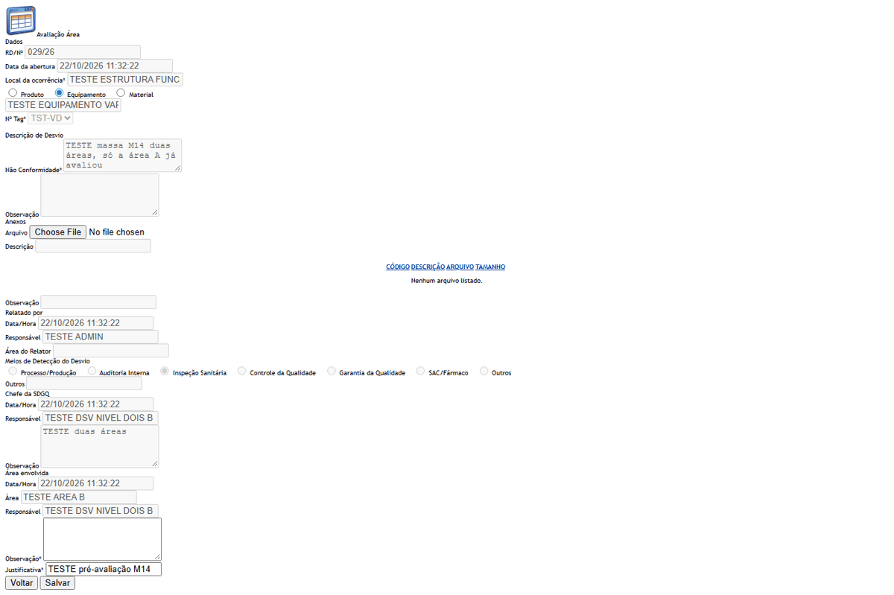
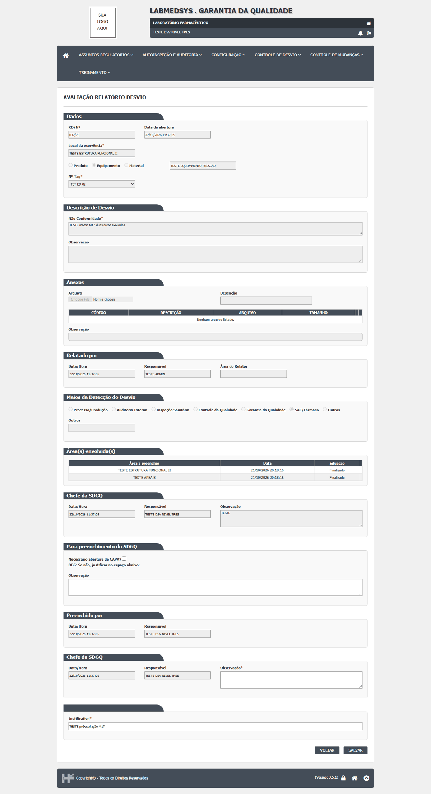
DV-GQ-041 · A observação da área só com espaços é aceita e o desvio avança
A observação da área só com espaços é aceita e o desvio avança. O que a tela mostra: Grava; o desvio avança.
Como reproduzir o erro, passo a passo
- Observação da área só com espaços e salvar.
Esperado
Recusa.
Obtido
Grava; o desvio avança.
Evidência (captura da tela)
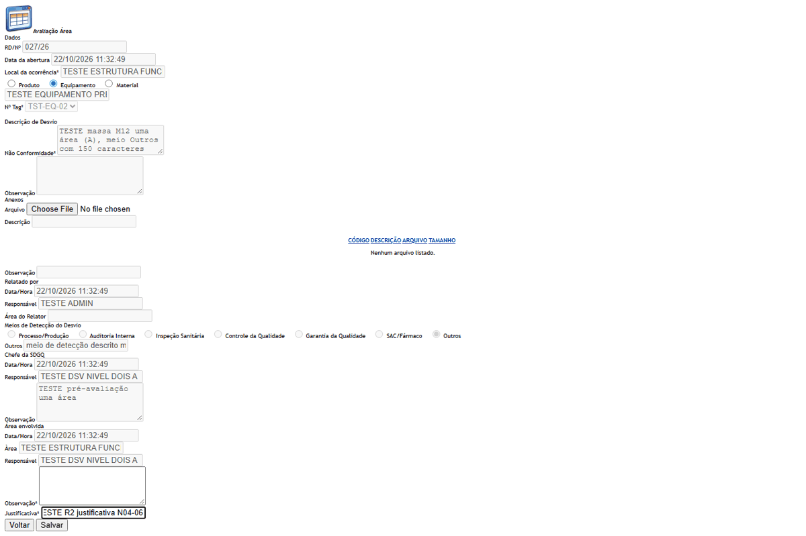
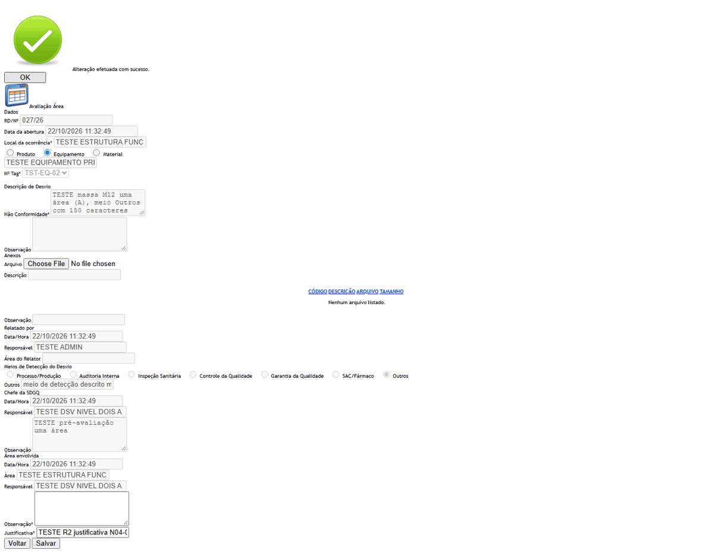
DV-GQ-042 · A avaliação da área não deixa registro no histórico
A avaliação da área não deixa registro no histórico. O que a tela mostra: O histórico não ganha nenhum registro; a avaliação que fecha a etapa deixa só a mudança de situação, sem a observação.
Como reproduzir o erro, passo a passo
- Salvar a avaliação de uma área quando falta outra (030/26) e abrir o histórico.
Esperado
Registro da avaliação, com texto, quem e quando.
Obtido
O histórico não ganha nenhum registro; a avaliação que fecha a etapa deixa só a mudança de situação, sem a observação.
Evidência (captura da tela)
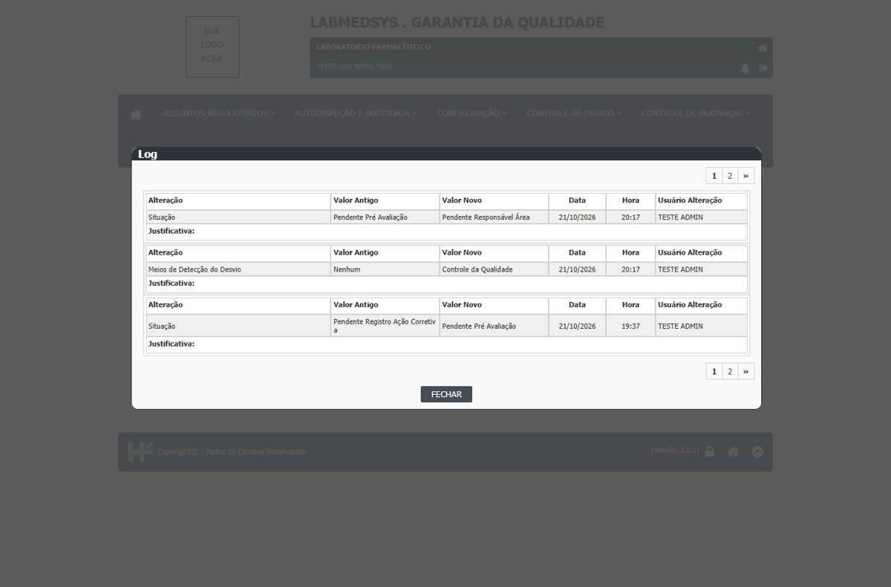
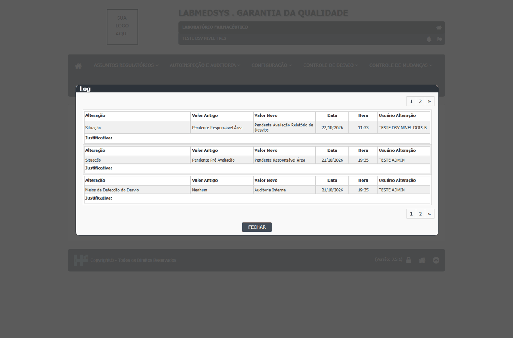
DV-GQ-062 · Escolher Material ou Produto no tipo de item esconde o botão Salvar em 4 telas do Controle de Desvios
Ao escolher Material ou Produto no tipo de item, o botão Salvar some e só resta Voltar. Acontece em Relatório de Desvios (Incluir), Registro Ação Corretiva Imediata, Pré Avaliação Relatório Desvios e Avaliação Área; não acontece em Relatório de CAPA nem nas telas de plano. Em Pré Avaliação e Avaliação Área o Salvar não volta nem depois de voltar a Equipamento. Somado ao DV-GQ-010 (a busca de Produto e Material não devolve itens), não há como gravar um desvio de produto ou material pela tela, que é o caso central das BPF. Gravidade subida de Baixa para Alta no repasse de 06/11/2026 (RDC 658/2022, rastreabilidade do lote).
Como reproduzir o erro, passo a passo
- Abrir Controle de Desvios › Relatório de Desvios › Incluir (ou Editar na Avaliação Área e na Pré Avaliação).
- Clicar em Equipamento e escolher um item: o Salvar aparece.
- Clicar em Material ou Produto: o Salvar some.
- Voltar a Equipamento: nas telas Relatório de Desvios e Registro Ação Corretiva Imediata o Salvar volta; na Pré Avaliação e na Avaliação Área não volta.
Esperado
O Salvar continua visível, e é possível gravar o desvio com item do tipo Produto, Equipamento ou Material.
Obtido
O Salvar some ao escolher Material ou Produto, em 4 telas; em 2 delas não volta.
Evidência (captura da tela)


DV-GQ-083 · Duas áreas que salvam ao mesmo tempo deixam o desvio parado em "Pendente Responsável Área"
Duas áreas que salvam ao mesmo tempo deixam o desvio parado em Pendente Responsável Área.
Como reproduzir o erro, passo a passo
- Desvio com duas áreas (A e B) pendentes.
- Um usuário de cada área abre o Editar e as duas salvam ao mesmo tempo.
Esperado
Desvio em Pendente Avaliação Relatório de Desvios.
Obtido
As duas áreas ficam Finalizado, mas o desvio continua Pendente Responsável Área, sem lápis na tela 5; ninguém consegue levá-lo adiante pelas telas.
Sem captura de tela registrada para este defeito.
DV-GQ-010 · Produto e material não aparecem na busca do desvio: o desvio salva sem item e sem lote
A busca de Produto e de Material no desvio não devolve nada (a de Produto abre a janela vazia, sem mensagem; a de Material mostra "Ocorreu um erro interno não esperado."); só a de Equipamento devolve itens. Não há como ligar o desvio a um lote: ele salva sem produto, material e lote. Por isso o efeito do desvio no lote (CQ, Estoque, Produção) não pôde ser testado. Reconfirmado em 21/10 e 22/10/2026. Repasse de 06/11/2026: o mesmo erro aparece também no Registro Ação Corretiva Imediata e na Pré Avaliação ("Ocorreu um erro interno não esperado." na busca de Material e Produto); na Avaliação Área a busca não mostra nada. Com Equipamento a busca funciona.
Como reproduzir o erro, passo a passo
- Abrir Controle de Desvios › Relatório de Desvios › Incluir.
- No item, escolher Produto (ou Material), digitar pelo menos 3 letras e clicar em buscar.
- Salvar o desvio sem item.
Esperado
A busca devolve produtos e materiais, permitindo ligar o lote ao desvio.
Obtido
Produto: janela vazia sem mensagem. Material: "Ocorreu um erro interno não esperado." Só o equipamento aparece. O desvio salva sem item e sem lote.
Evidência (captura da tela)


DV-GQ-026 · O filtro por RD com o ano (por exemplo 030/26) não acha o desvio na maioria das telas
O filtro por RD com o ano (por exemplo 030/26) não acha o desvio na maioria das telas. O que a tela mostra: Não acha em 9 de 12 telas; funciona nas telas 1, 2 e 6.
Como reproduzir o erro, passo a passo
- Filtro RD/Nº com o número e o ano (por exemplo "030/26").
Esperado
Achar o desvio.
Obtido
Não acha em 9 de 12 telas; funciona nas telas 1, 2 e 6.
Evidência (captura da tela)

DV-GQ-029 · O botão Editar aparece nas listas para quem não deveria editar
O botão Editar aparece nas listas para quem não deveria editar. O que a tela mostra: O botão Editar aparece; nas telas 7 e 9 o clique devolve à lista; sem grupo a lista de Avaliação Área mostra Editar.
Como reproduzir o erro, passo a passo
- Usuário sem grupo (ou de nível 2) abre as listas.
Esperado
Lista sem botões de edição.
Obtido
O botão Editar aparece; nas telas 7 e 9 o clique devolve à lista; sem grupo a lista de Avaliação Área mostra Editar.
Evidência (captura da tela)


DV-GQ-045 · A justificativa da avaliação pode ficar em branco e a digitada não vai para o histórico
A justificativa da avaliação pode ficar em branco e a digitada não vai para o histórico. O que a tela mostra: Salva sem justificativa; a digitada não aparece no histórico.
Como reproduzir o erro, passo a passo
- Salvar com a Justificativa apagada (campo com asterisco) e com texto.
Esperado
Recusa sem justificativa; justificativa guardada no histórico.
Obtido
Salva sem justificativa; a digitada não aparece no histórico.
Evidência (captura da tela)
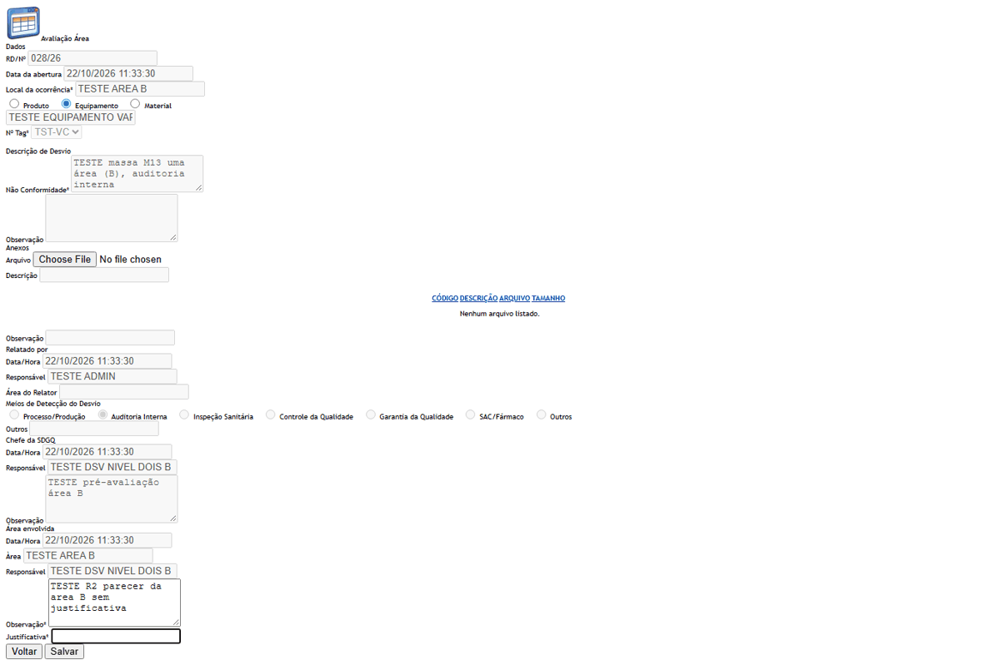
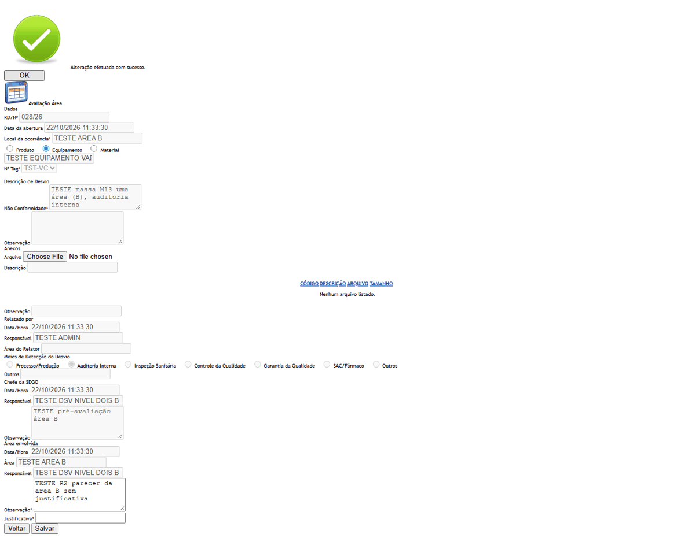
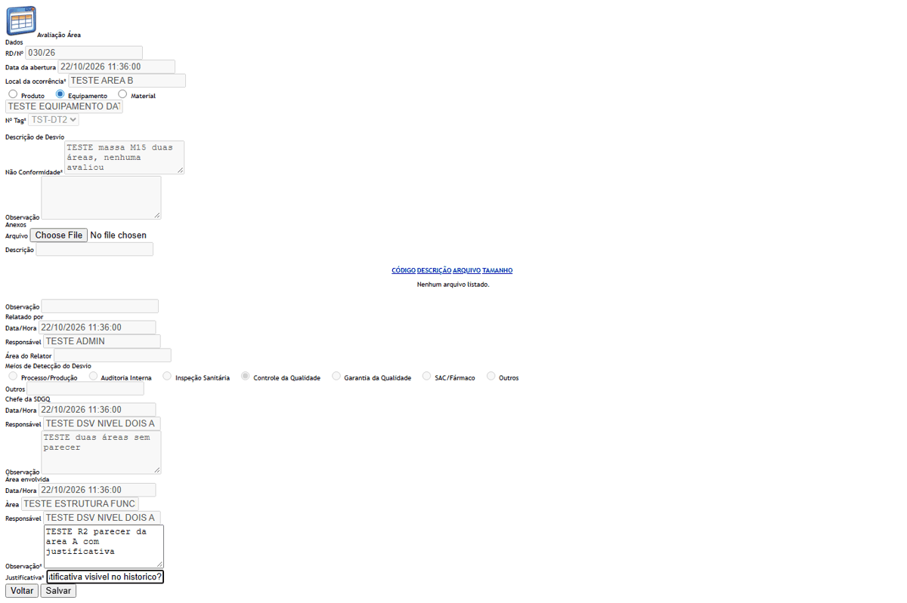
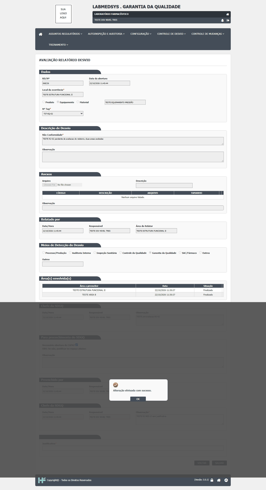
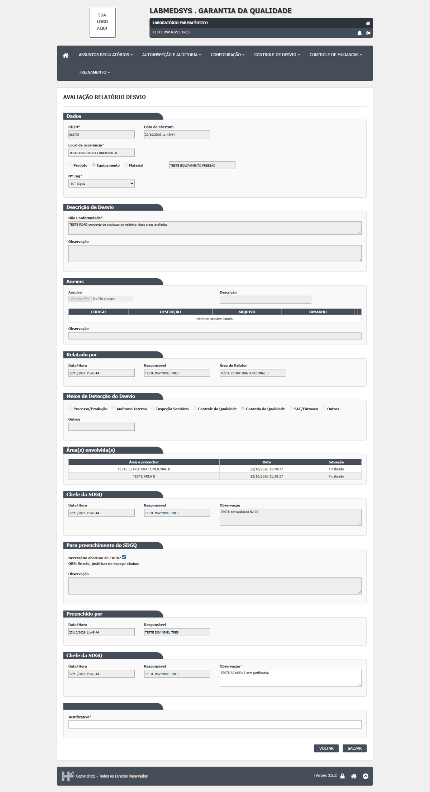
DV-GQ-060 · O filtro de situação "Finalizado" ou "Aprovado" devolve a lista inteira
O filtro de situação "Finalizado" (tela 4) e "Aprovado" (tela 9) devolve a lista inteira.
Como reproduzir o erro, passo a passo
- Na tela Avaliação Área, filtrar a Situação por "Finalizado" e pesquisar.
- Na tela Monitoramento do Plano de Ação Corretiva, filtrar por "Aprovado" e pesquisar (a Monitoramento do Plano de Ação Preventiva repete o problema, rodada 3 parte C).
Esperado
Só os desvios na situação escolhida.
Obtido
Avaliação Área: 7 linhas, inclusive os pendentes (igual a TODAS). Monitoramento corretivo: 14 linhas, inclusive os 6 pendentes. Na Monitoramento preventiva o filtro "Aprovado" também devolve a lista inteira.
Evidência (captura da tela)


DV-GQ-061 · A avaliação de uma área que já avaliou abre editável pelo endereço e diz "sucesso" sem mudar nada
Salvar a observação de uma área que já avaliou diz "sucesso", mas o texto não muda.
Como reproduzir o erro, passo a passo
- Abrir o Editar de uma área que já avaliou (029/26, pelo endereço que a lista da área pendente usa), mudar a observação, justificativa, Salvar, abrir a Visualizar.
Esperado
Texto novo, ou recusa.
Obtido
"Alteração efetuada com sucesso." e o texto antigo.
Evidência (captura da tela)